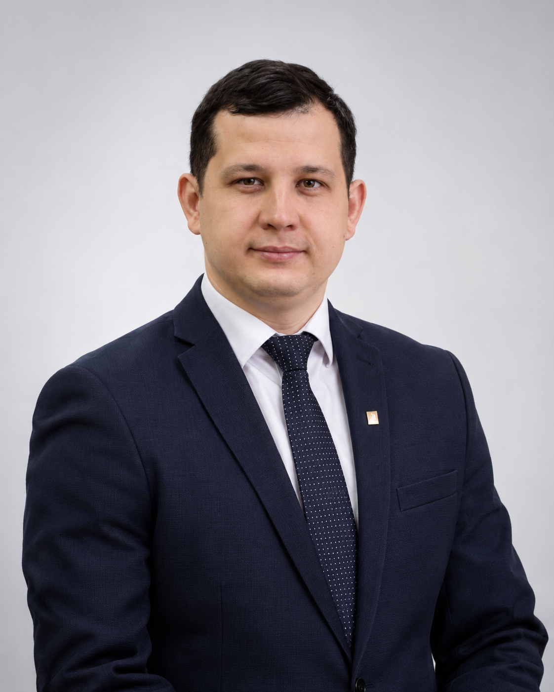

01
Информатика
Алгоритмы, программирование, цифровая грамотность, подготовка к экзаменам и олимпиадам.
Заместитель директора по учебной работе и учитель информатики Гимназии №19 Казани, педагог высшей категории. Развиваю современную образовательную среду, цифровые проекты, искусственный интеллект и проектное обучение.
Официальный персональный сайт: Багаутдинов Зуфар Фаритович · заместитель директора · учитель информатики · Гимназия №19 · Казань

Интерес к математике и информатике определил мой профессиональный путь ещё в школе. После обучения в Казанском федеральном университете я продолжил образование в магистратуре по направлению «IT в физико-математическом образовании».
Педагогическую работу воспринимаю не как передачу готовых знаний, а как создание среды, в которой ученик учится ставить вопросы, проверять гипотезы, работать в команде и создавать собственные проекты.
Официальная информация. В Гимназии №19 Казани работаю заместителем директора по учебной работе и учителем информатики, имею высшую квалификационную категорию. В 2021 году занял 1 место на районном этапе конкурса профессионального мастерства «Учитель года» в номинации «Педагогический дебют».
Профиль педагога на сайте Гимназии №19 ↗
Профиль на «Электронном образовании Республики Татарстан» ↗
Ответственный за организацию ГИА-9 в Гимназии №19 ↗
Опыт участия в WorldSkills, научно-практических конференциях, семинарах и профессиональных педагогических сообществах сформировал устойчивый интерес к современным образовательным технологиям, проектной деятельности и развитию цифровой культуры.
Алгоритмы, программирование, цифровая грамотность, подготовка к экзаменам и олимпиадам.
Кружок ИИ, работа с современными моделями, этика, исследовательские и практические мини-проекты.
Arduino, датчики, электрические цепи, прототипирование и инженерное мышление.
От идеи и исследования до прототипа, публичной защиты и участия в конкурсах.
Материалы для уроков, цифровые ресурсы, выступления и обмен педагогическими практиками.
Сайты, интерактивные тренажёры, презентации и инструменты для школьной образовательной среды.
Старые разделы Wix объединены в одну понятную библиотеку.
Бесплатные онлайн-курсы и практические задания.
Открыть ↗ УченикамИнтерактивное изучение основ программирования.
Открыть ↗ ЭкзаменыТренировочные задания для самостоятельной подготовки.
Открыть ↗ ЭкзаменыТематические подборки и варианты ОГЭ.
Открыть ↗ ИнформатикаЗадачи, теория и материалы по информатике.
Открыть ↗Планы, сценарии занятий, выступления и практики использования ИИ.
Раздел развиваетсяПамятки по безопасной работе детей в цифровой среде и с ИИ.
Раздел развиваетсяПрактические занятия для школьников: от понимания принципов работы моделей до собственных мини-проектов и анализа новых исследований.
Электрические цепи, датчики, моторы, первые скетчи и создание работающих прототипов.
Интерактивные сайты, учебные материалы, цифровые инструменты и сервисы, упрощающие работу учеников и педагогов.
З. Ф. Багаутдинов, А. А. Агафонов · материалы конференции ИТОН-2015 / KAZCAS-2015.
По вопросам обучения, проектов, методического сотрудничества и образовательных инициатив.